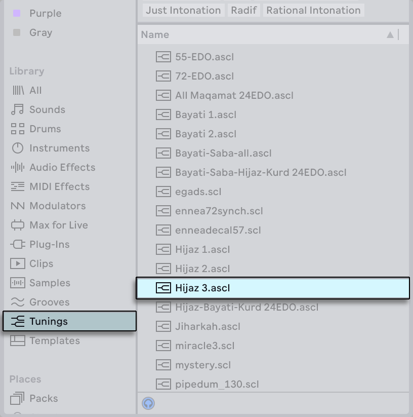
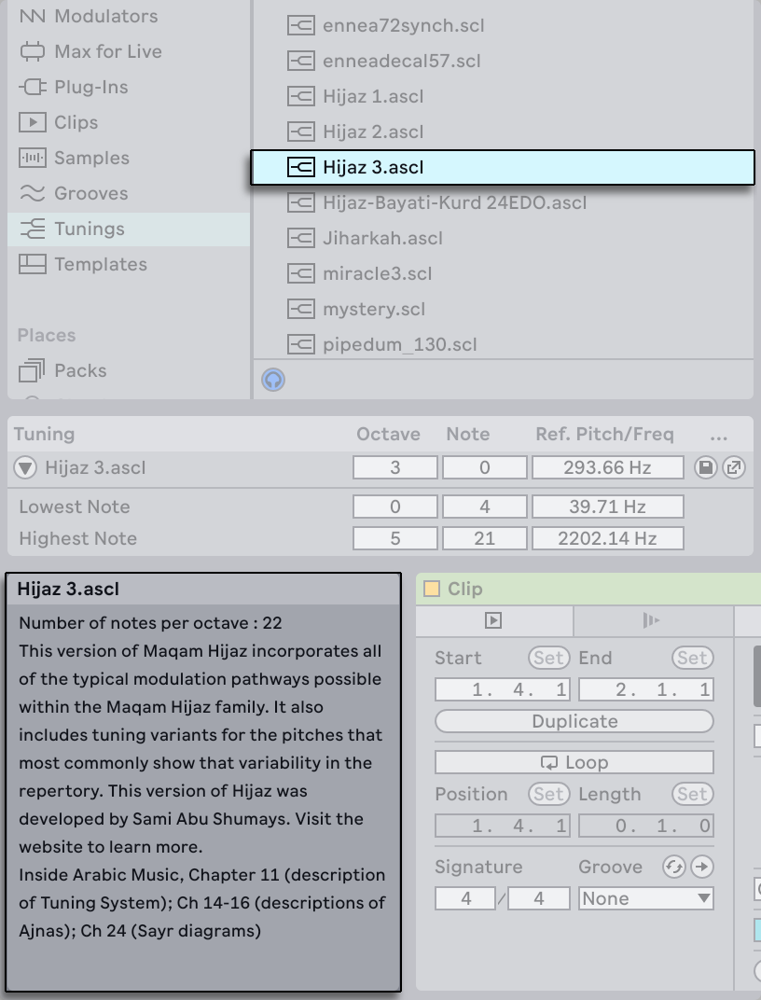
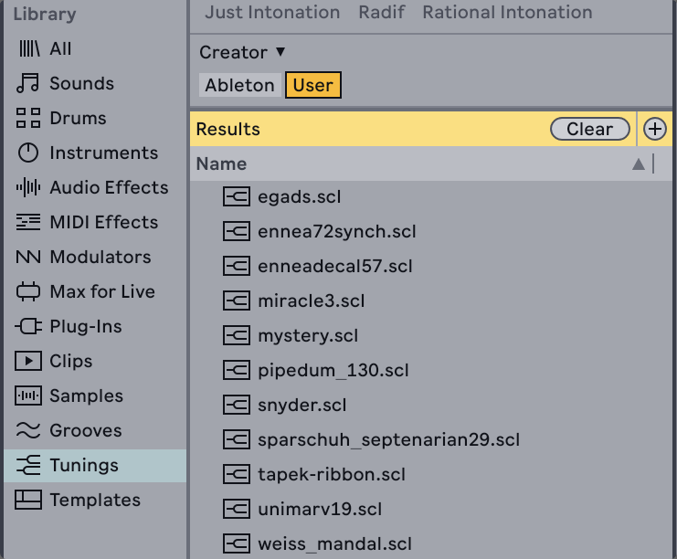
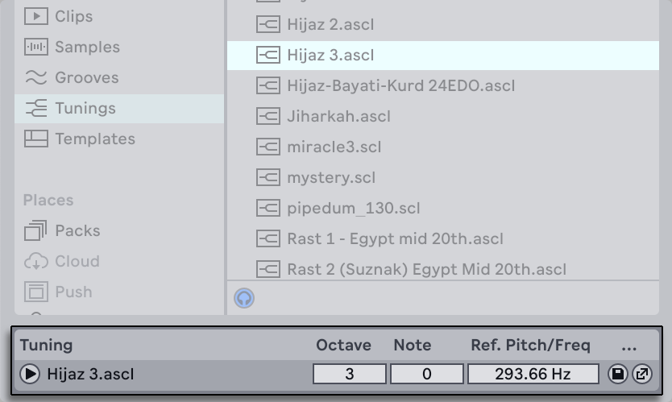
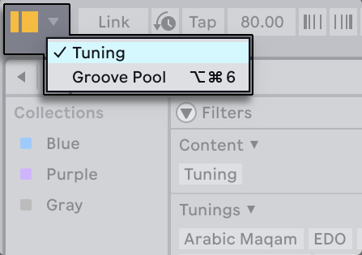
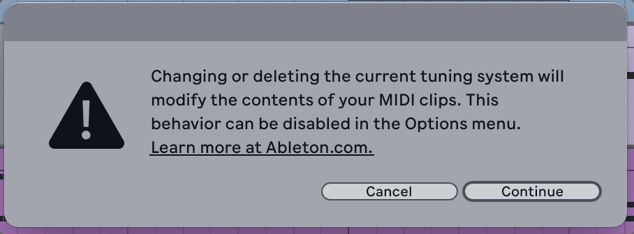
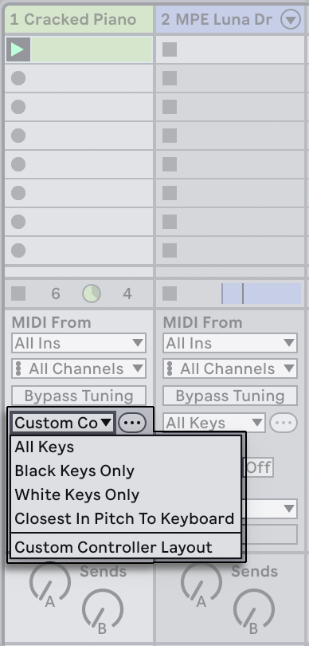
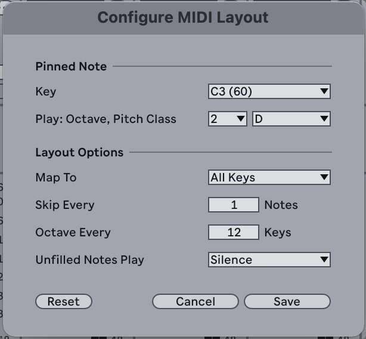

15. Using Tuning Systems
By default Live uses 12TET tuning, this means note pitches are divided equally into twelve parts per octave. However, there are numerous ways that pitches can be distributed across an octave or pseudo-octave (where notes are repeated at a different interval than an octave), and tuning systems can be used to specify these variations.
Live 12 supports Scala files, which you can load into a Live Set to use a custom tuning for notes.
The Core Library also comes with a set of tuning systems, which can be found in the Tunings label of the browser. Tuning files from the Core Library use an Ableton-specific extension to the SCL (Scala) file format called ASCL.

When hovering over or selecting tuning systems in the browser, a short description of the tuning, including the number of notes per octave, is shown in the Info View. This description is also shown when hovering over the name of a loaded tuning system.

You can add your own .scl or .ascl files to any folder in Live’s Places so that they show up in the Tunings label of the browser under the User tag.

All of Live’s built-in instruments are supported for use with tuning systems, as well as MPE-enabled plug-ins or external Max for Live instruments, provided that their pitch bend range is set to 48 semitones.
Note that instruments that are not MPE-enabled or use different pitch bend ranges are likely to play out of tune.
15.1 Loading a Tuning System
To load a tuning system into a Set, you can double-click on a tuning file in the browser, or select the file and press Enter. These methods will automatically open the Tuning section of the browser, which is hidden by default.

You can also open the Tuning section using the browser’s view control menu.

External ASCL or SCL files on your computer can be dragged and dropped into the Tuning section as well. As long as the file is loaded in the Tuning section, the tuning will be saved with the Live Set.
When a tuning system is added to a Live Set, the notes in the piano roll no longer represent standard MIDI notes, but instead show the corresponding notes of the tuning.

You can hover over a note in the piano roll to see useful information, such as the note’s pitch and frequency, in the Status Bar. The specified pitch is produced when a note is played in the piano roll or via a keyboard.

By default, if a tuning system is removed or changed to a different tuning, the position of existing notes in the piano roll is not changed, but the pitches shown in the note ruler are updated to match the new tuning. This means the original notes may not produce the same pitch.
The “Retune Set On Loading Tuning Systems” entry in the Options menu can be enabled so that when a tuning system is loaded or changed, the notes will closely match the pitches of the original notes, ensuring that a melody sounds as close to the original as possible. You will see a dialog appear to confirm this process when loading a tuning system.

When automatic note retuning is enabled, removing or switching between tuning systems can cause original notes to be changed or lost. This can happen when two notes which overlap in time and originally had different pitches both get mapped to the same pitch in the new tuning system, as that new pitch is closest to both original pitches. In that case, one of the notes may be deleted or shortened.
Note that the Scale Mode choosers in Clip View and the Control Bar are no longer visible when a tuning system is loaded, and the devices that are scale aware have their Use Current Scale toggle disabled.
15.2 The Tuning Section
Various pitch settings for a tuning system are accessible via the Tuning section.

You can toggle the triangle next to the name of the tuning file to expand the section and access additional settings for the lowest and highest notes for the reference pitch.
- Tuning displays the name of the tuning system.
- Octave sets the octave of the note used for the reference pitch.
- Note sets the note in the octave used for the reference pitch.
- Ref. Pitch/Freq sets the frequency of the reference pitch. The pitch of all notes in the Set can be raised or lowered by changing the frequency.
- Lowest Note sets what the lowest note plays by assigning it to an octave and pitch class. Changing the lowest note also affects the highest note, preserving the number of notes in between.
- Highest Note sets what the highest note plays; changing the highest note will also update the lowest note.
Note that the reference pitch is only audibly affected by the Ref. Pitch/Freq value. Changing the Octave or Note values will update the frequency displayed in the Ref. Pitch/Freq slider to match the newly specified notes, however, no audible change is produced until the reference pitch frequency value itself is adjusted. This is to prevent any sudden pitch changes when setting the Octave or Note values.
The floppy disk button to the right of the reference pitch frequency can be used to save the currently loaded tuning as an .ascl file to the Tunings label in the browser.
Pressing the arrow button next to the Save Tuning System button opens a link to Ableton’s Tuning website that contains more information about the loaded tuning system, as well as an interactive editor for trying out variations of the associated pitches. You can also export any custom tuning systems you create there. Note that not all tuning systems have external webpages, and the arrow button will be greyed out if no relevant link is available.
You can select a file in the Tuning section and press the Delete key to remove it and return to 12TET tuning.
15.3 MIDI Track Options for Tuning Systems
You will see a few tuning-specific options appear in the I/O section of MIDI tracks when a tuning system is loaded that let you customize your track and controller setups.
15.3.1 Bypass Tuning
The Bypass Tuning toggle can be used to ignore a tuning system for a specific MIDI track.

When enabled, the MIDI Note Editor will display 12TET tuning notes in the piano roll for any clips in that track.
Note that MIDI tracks containing Drum Racks automatically bypass any loaded tuning file.
15.3.2 MIDI Controller Layouts
As notes in a tuning system can differ from 12TET layouts, the Track Tuning MIDI Controller Layout settings allow you to specify which notes a controller can be mapped to, as well as create a custom layout if needed. This is useful for re-aligning the layout of an external keyboard to match the piano roll, if the layout differs when using certain tunings.

- All Keys maps notes in the tuning system to all keys on the controller.
- Black Keys Only maps notes to the black keys only. This layout is centered around C#3.
- White Keys Only maps notes to the white keys only. This layout is centered around C3.
- Closest in Pitch to Keyboard maps notes to the closest pitch on the keys.
- Custom Controller Layout lets you define a specific layout for the controller.
When Custom Controller Layout is selected in the chooser, you can press the … button to the right to access the Configure MIDI Layout dialog and adjust the layout settings.

Custom controller layouts will be saved and recalled with the Live Set.
15.4 Learn More About Tuning Systems
You can visit Ableton’s Tuning website to read more about Live’s built-in tuning systems, as well as create and export your own custom tunings using interactive widgets.
Using the ASCL format, you can also create and import your own tuning systems for Live by following the designated specifications.